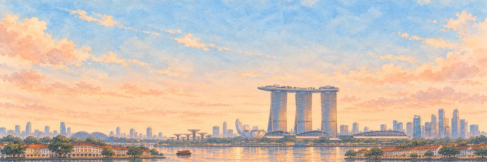
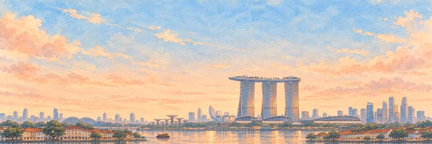
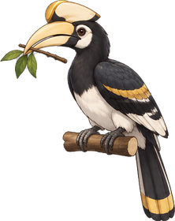
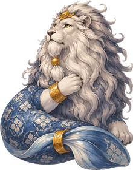

新加坡 纸飞机游戏
在华灯初上时，从超级树中间飞过，飞过滨海湾。
一路都是低矮的店屋，一直到海湾。闯过双角犀鸟，再闯过港湾长老。
狮城
Singapura 的意思是「狮子城」。马来传说讲到，大约七百年前，一位名叫桑尼拉乌他马（Sang Nila Utama）的王子在岛上看见一只奇怪的野兽，以为那是狮子。几百年来，往返中国和印度的船只都会在这里停靠。1965 年，新加坡成为一个独立国家。
“我要找一找王子看到的那只狮子。”
地标超级树
在滨海湾花园里，十八棵超级树高 25 到 50 米。它们是用钢铁做的，身上长满了十六万多株活的植物：蕨类、兰花和藤蔓。有几棵的树冠上还装着太阳能板。花园在 2012 年开放，建在填海得来的土地上。每天晚上，超级树都会随着音乐亮起灯来。
街区
老城由几个各自独立的街区发展起来。在牛车水，马里安曼兴都庙是新加坡最古老的兴都庙。它最早的建筑用木头和棕榈叶茅草建成，在 1827 年建起。小印度沿着实龙岗路发展起来。1824 年，英国人承认甘榜格南是柔佛苏丹家族的土地。那里的苏丹回教堂有两个巨大的金色圆顶。
河流与海湾
新加坡河长约 3.2 公里，从金声桥流到滨海湾，途经罗拔申码头、克拉码头和驳船码头。1977 年，总理李光耀号召清理这条河，河床上的污泥被挖了出来。鱼尾狮是一座 8.6 米高、狮头鱼身的雕像，1972 年在河口揭幕。2008 年滨海堤坝启用后，海湾里蓄的就是淡水，成为市中心的第一个蓄水池。
天际线
金融区的大楼密集地围绕着莱佛士坊，就在河口以南。因为飞机航线，那里的建筑高度要保持在 280 米以下。国浩大厦获准建得更高，约 290 米，2016 年成为全国最高的建筑。在海湾对面，滨海湾金沙的三座 55 层大楼在 2010 年开业。它们的顶部由空中花园（SkyPark）连在一起，这是一个长 340 米的平台。
何时去看
天黑以后来。每晚 8 点和 9 点，滨海湾金沙都会在海湾上演出 Spectra，这是一场 15 分钟的免费灯光水景表演。你也可以从对岸的鱼尾狮公园观看。
谁在守护新加坡的心愿。
精英守护者先醒来，首领守护者守着心愿本身。打中它们的弱点，会「砰！」一声；补上最后一击，就是「KO！」。然后它们都会笑着鞠躬。
-
精英


双角犀鸟
翅膀响得像蒸汽火车 · 超级树的守护者
双角犀鸟生活在南亚和东南亚的热带雨林里。它巨大的黄色嘴巴上面顶着一个空心的「头盔」，叫作盔突。它扇翅膀的声音特别响，人们把它比作蒸汽火车。到了筑巢的时候，雌鸟会把自己封在树洞里，雄鸟就从一条窄缝里给她喂食。
犀鸟叼着一根筑巢用的小树枝，沿着树干蹦了几下，打量着飞机。犀鸟扑腾了一下，差点把小树枝弄掉，又接住了。犀鸟低下它大大的盔突鞠了个躬，叼着小树枝飞回巢里去了。
“我要种一棵树，给它做窝。”
-
首领

港湾长老
滨海湾的鱼尾狮 · 港湾的守护者
新加坡的鱼尾狮，一半是狮子，一半是鱼，1964年被设计出来，作为旅游局的标志。狮子头让人想起那位给小岛取名「新加坡拉」、也就是狮城的王子。鱼身代表淡马锡，意思是海城，这是小岛的旧名。从1972年起，一座鱼尾狮雕像就在河边喷水，如今它面朝滨海湾。
港湾长老盘坐在卷起的尾巴上，捋了捋长长的灰胡子，冲着飞机微笑。长老的眉毛一下子扬了起来，他吐出的下一个水圈歪歪扭扭的。长老呵呵一笑，挥手让飞机过去，又吐了一个小小的水圈，祝它好运。
“我要从他的水圈正中间飞过去。”
新加坡完成了。我从超级树中间飞过的那一刻，它们正好亮了起来。
- 犀鸟一直叼着那根小树枝没松口。它还有个窝要回去呢。
- 港湾长老每吐一个水圈前都要鼓起腮帮子。我也鼓起腮帮子回敬他。
飞机从曼谷飞到新加坡。